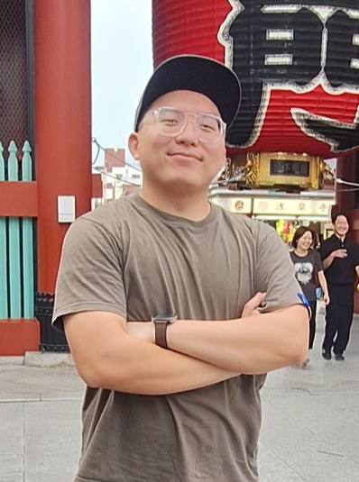
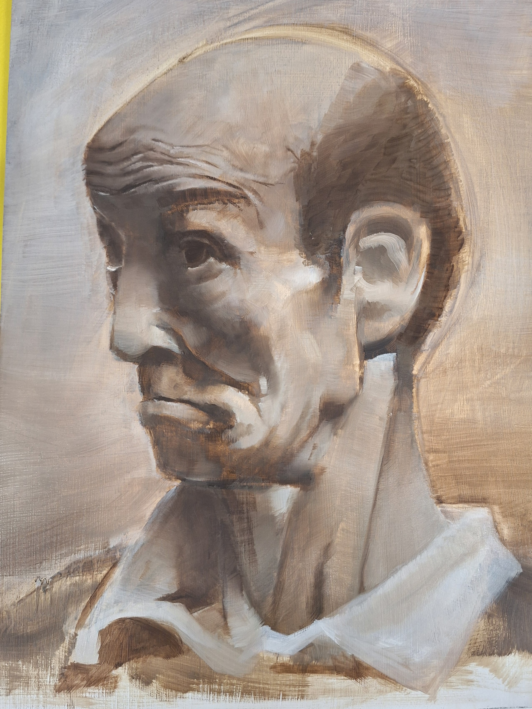
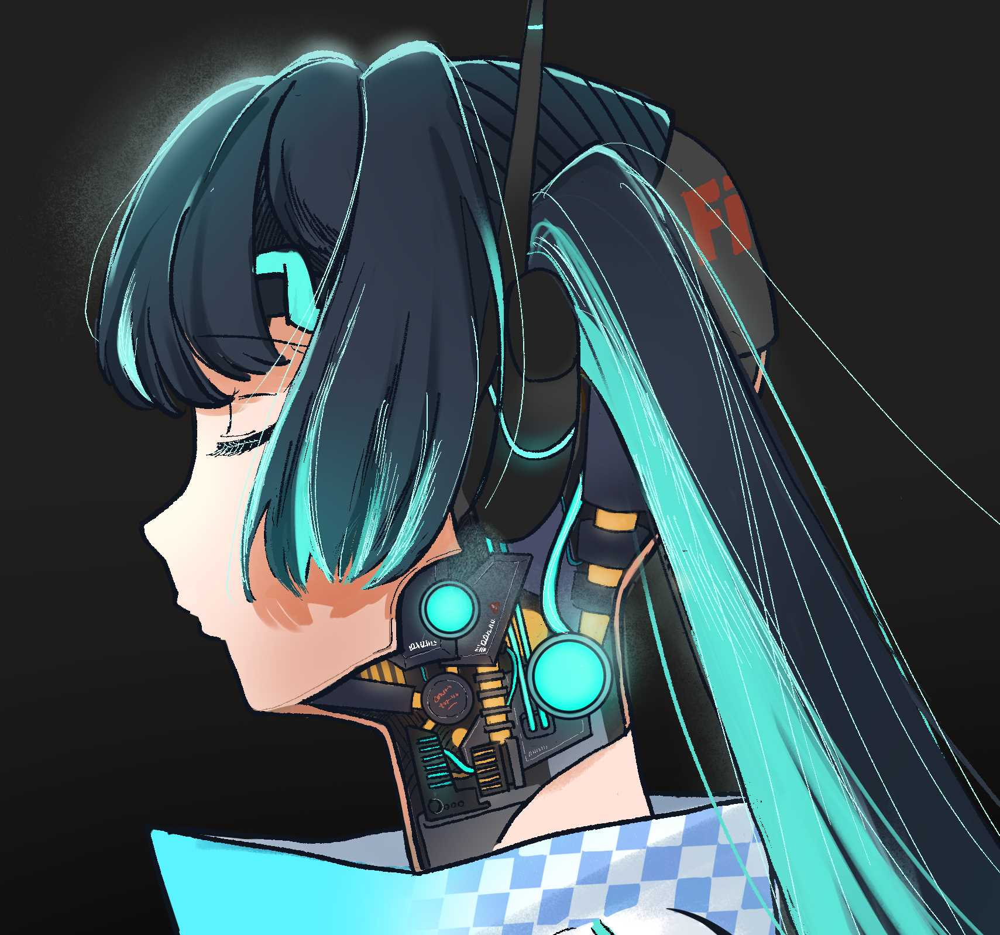
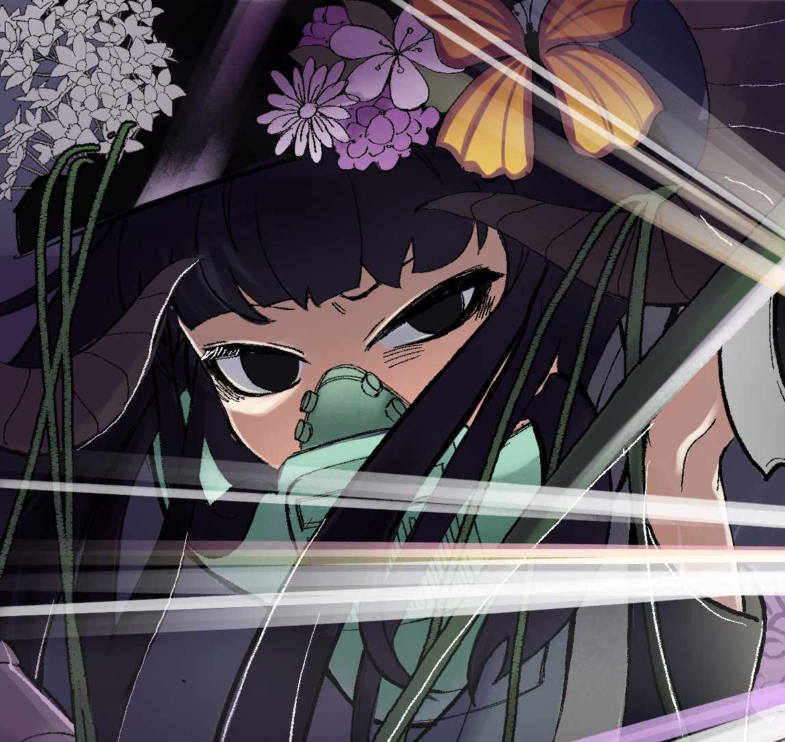

David Sun Portfolio
Digital Artist | Illustration | Character Design

Welcome
Hi, I’m David Sun, a digital artist currently studying visual art. I focus on illustration and character design, and I enjoy exploring different styles and compositions in my work.
This website shares my artwork, the software I use, and other parts of my creative process. You can also find a video page and a commission page as part of this portfolio project.
My Art Style



Style Description
My art style focuses on soft color blending and expressive character design. I often combine anime-inspired elements with more detailed rendering to create visually engaging compositions.
I enjoy experimenting with lighting, color contrast, and composition to make each piece feel dynamic and emotional.